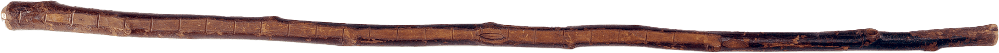

Thoreau’s Walking Stick
Thoreau walked for hours
every day, all year long.
As he went, he recorded his
observations of the natural world:
the depth of snow,
the presence of animal tracks,
when flowers bloomed or ice melted.
He recognized the extraordinary
in ordinary events.
every day, all year long.
As he went, he recorded his
observations of the natural world:
the depth of snow,
the presence of animal tracks,
when flowers bloomed or ice melted.
He recognized the extraordinary
in ordinary events.
